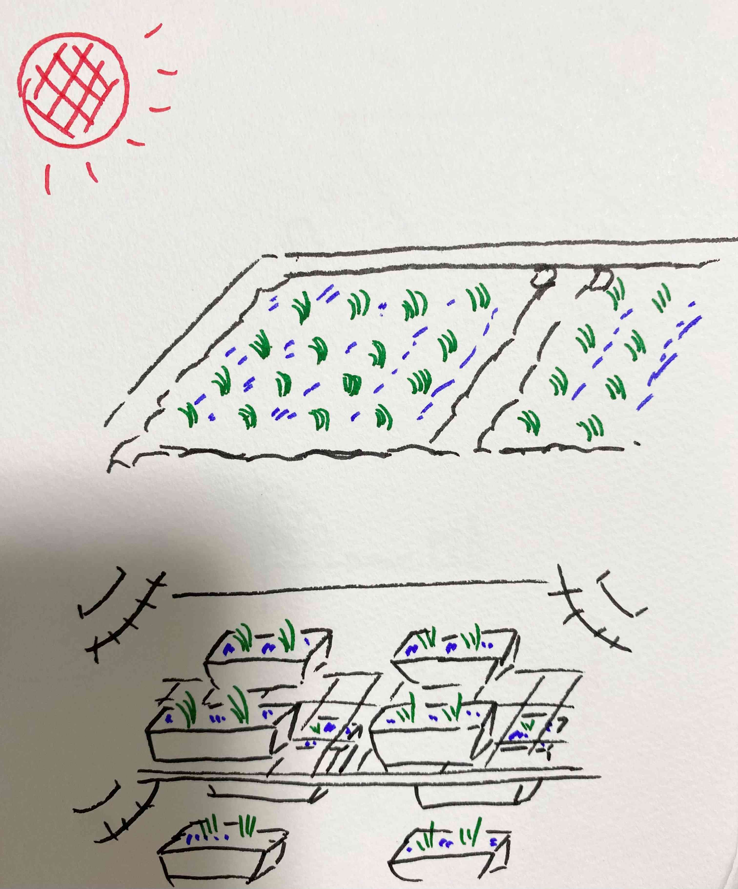
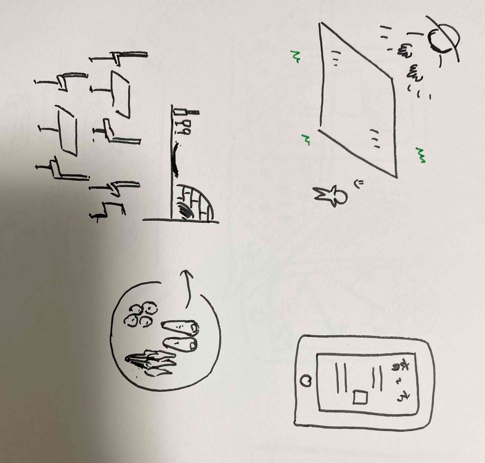

世の中に存在する課題の発見（観察課題）
2024年夏、スーパーなどの小売店の米の売り切れが相次ぎ米を購入することができない人が続出し
令和の米騒動と言われるまでの出来事があった。
この出来事を観察し、課題を見つける。
原因
供給不足
昨年の猛暑による不作や食用米の生産が減っているため供給量が追いつかなかったと考えられる。
後継者不足
農業をしている人の年齢層は高くなっている。
また、後継者が少ないため農業を辞める人の割合の方が多い。
スポット契約
スーパーなどの小売店はスポット契約で米の仕入れをしていることが多いため安定した供給ができなかった。
課題
暑さに強い米の開発
温度の管理や多く生産できる施設をつくる

若者が農業に取り組める環境
EX:農地を貸してもらう、困ったらすぐに聞ける、ブランドを作る
